O que cada função faz, onde ela fica e o que fazer quando ela
não se comporta como você espera. Feito para ser consultado no meio do
plantão, uma página por assunto.
Versão do Assistente: 2.33.0 · setembro de 2026
As imagens mostram o Assistente sobre um fundo neutro — o que aparece
nelas é exatamente o que você vê por cima da tela do Meeds.
O que tem aqui
Os botões e onde eles ficam A pilha no canto, e como recolher
O painel da engrenagem Ligar e desligar funções, cadastrar-se
Alarme de fila — as três intensidades Completo, discreto e silencioso
Alarme — quando você não está na aba Notificação do sistema e janela de aviso
Ajustes do alarme Som, volume e avisos
Gerador de APAC Município, guia de preenchimento e prévia
Modelos salvos Criar, aplicar e substituir — nos três geradores
Consulta REMUME Buscar medicamento por nome comercial ou errado
Laudos de Sete Lagoas e Conceição do Mato Dentro Mesma lógica da APAC
Histórico de documentos Reabrir a parte clínica de um laudo anterior
Quando o Assistente é atualizado A tela de novidades
Privacidade — o que fica salvo e o que não fica Leia se alguém perguntar
01
Os botões e onde eles ficam
canto inferior direito
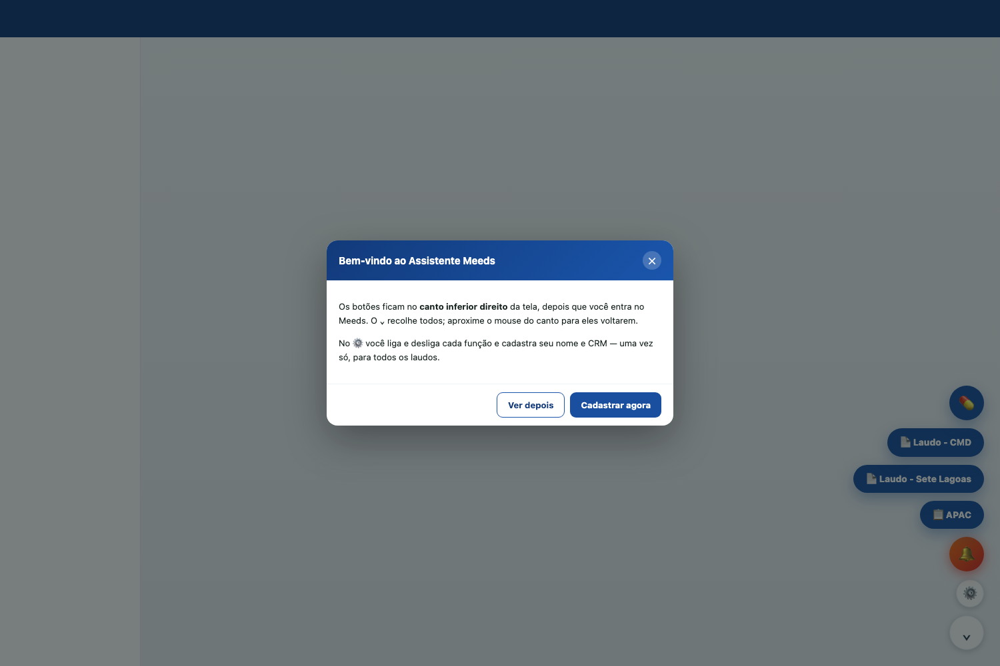
A pilha aparece depois que você entra no Meeds. Nunca antes.
Cada botão é uma função. Eles só aparecem depois do login — com a tela de
senha visível, o Assistente inteiro some.
🔔 / 🔉 / 🔕
Alarme de fila. O ícone mostra a intensidade atual; um clique troca.
📋 APAC
Gerador de APAC — Itaúna, Betim e Sete Lagoas.
📄 Laudo
Laudo de Alto Custo de Sete Lagoas e de Conceição do Mato Dentro.
💊
Consulta à REMUME do município do atendimento.
⚙️
Configurações, cadastro e histórico de versões.
⌄
Recolhe todos. Aproxime o mouse do canto para eles voltarem.
Eles ficam translúcidos sozinhos
Depois de alguns segundos parados, os botões ficam apagados para não
atrapalhar a tela. Voltam ao normal quando você chega perto com o mouse.
O alarme nunca fica translúcido.
02
O painel da engrenagem
botão ⚙️
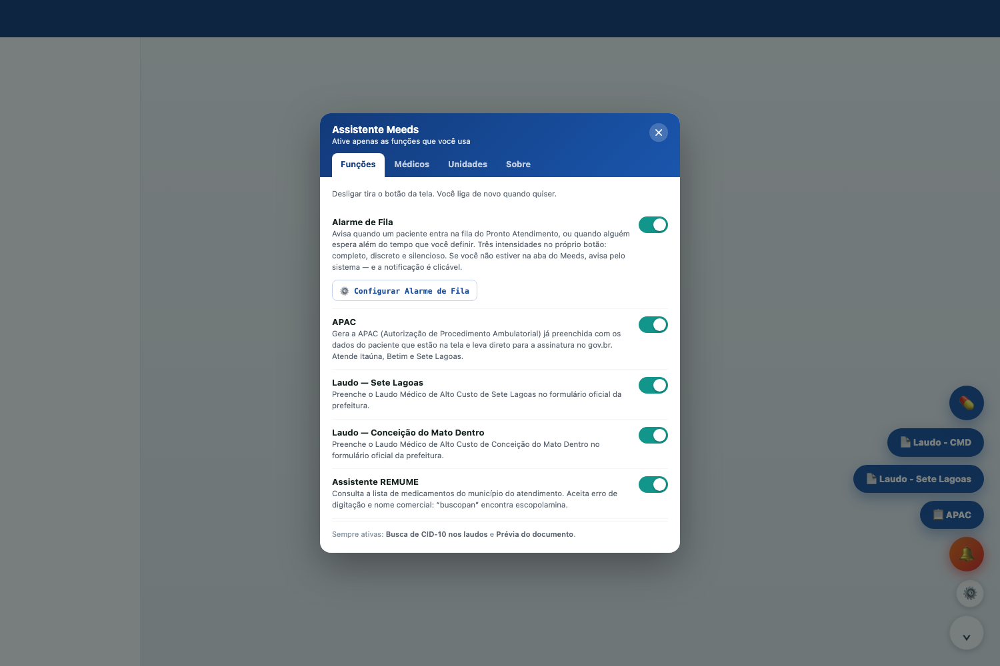
Aba Funções: cada chave liga e desliga um recurso.
As quatro abas
Funções
Liga e desliga cada recurso. Desligar tira o botão da tela na hora; nada é desinstalado.
Médicos
Seu nome, CRM e CPF. Cadastre uma vez — vale para todos os laudos.
Unidades
Estabelecimentos e CNES usados na APAC. As unidades conhecidas aparecem sozinhas quando você escolhe o município.
Sobre
Versão, o que mudou em cada atualização, e o canal de feedback.
Duas funções não têm chave
A busca de CID-10 dentro dos laudos e a prévia do documento estão sempre
ligadas. Elas não são funções separadas — são melhorias do próprio
formulário, e desligá-las só pioraria o preenchimento.
Trocando de computador?
Na aba Médicos, use Fazer backup. O arquivo leva seus médicos e suas
unidades cadastradas. No computador novo, use restaurar um arquivo.
03
Alarme de fila — as três intensidades
clique no botão do sino
O botão funciona como o de som do Waze: um clique troca a intensidade.
Você escolhe o quanto quer ser interrompido, sem precisar desligar o alarme.
🔔 Completo
Sirene repetindo, faixa vermelha no topo e moldura na borda da tela, até você silenciar.
🔉 Discreto
Um cartão no canto dizendo quem chegou e de qual município, e um som curto. Some sozinho.
🔕 Silencioso
Só o contador na aba do navegador. Nada de som, nada na tela.
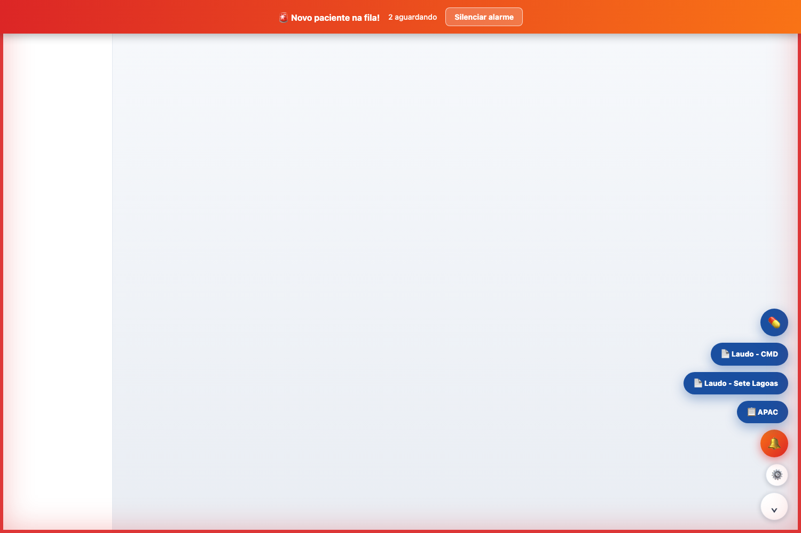
Modo completo. A faixa diz por que está tocando: 2 aguardando.
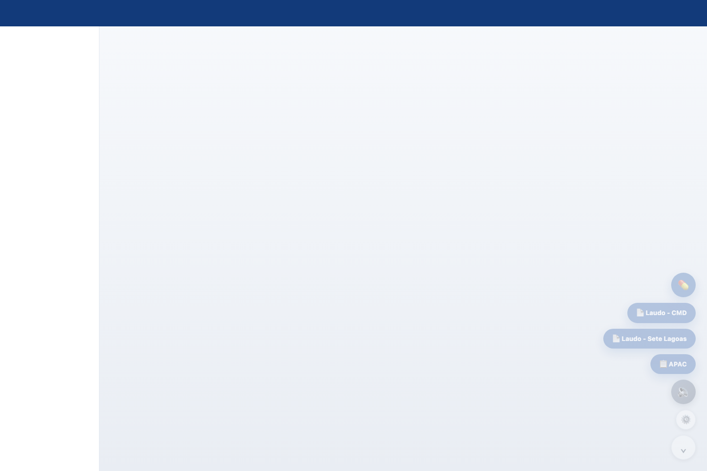
Modo discreto. O cartão traz o município, nunca o nome do paciente.
Silenciar não é ignorar
Ao silenciar, se ainda houver gente esperando, o alarme volta em 5 minutos.
Ele só para de vez quando a fila esvazia.
Para desligar o alarme por completo
Use a chave Alarme de Fila no painel da engrenagem. O botão do sino
escolhe quanto ele incomoda, não se ele existe.
04
Quando você não está na aba do Meeds
alarme de fila
É aí que o alarme mais importa e menos funcionaria: uma faixa vermelha na
aba do Meeds não serve para quem está no Memed ou em outra janela. Por isso
o aviso muda de canal conforme onde você está.
Onde você está
Como é avisado
Na aba, olhando
Som, faixa e moldura — conforme a intensidade escolhida.
Na aba, mas de fundo
Contador no título e no ícone da aba: (3) Meeds.
Fora do navegador
Notificação do sistema. Clicar traz o Meeds para frente e silencia.
Ninguém reagiu
Volta em 5 minutos e notifica de novo.
Autorizar a notificação — uma vez só
Clique com o botão direito no sino para abrir os ajustes.
Em Quando você não está na aba do Meeds, clique em Ativar avisos do sistema.
O navegador pergunta uma vez. Escolha permitir.
Clicou e não aconteceu nada?
Alguns navegadores — o Edge por padrão — silenciam esse pedido e só piscam
um ícone de sino na barra de endereço. Clique nele e escolha permitir.
Se a tela disser que está bloqueado, clique no cadeado ao lado do
endereço do site e libere as notificações.
Janela de aviso (opcional)
Nos ajustes há Abrir também uma janela de aviso. Ela abre uma janelinha
na barra de tarefas que fica lá até você fechar — ao contrário da
notificação, que some sozinha. Útil para quem trabalha com muitas janelas.
Usa Edge? Faça este ajuste uma vez
Em Configurações › Sistema e desempenho, procure "Nunca colocar estes
sites em suspensão" e acrescente o endereço do Meeds. O Edge coloca abas de
fundo para dormir, e aba dormindo não consulta a fila — o alarme fica
mudo. O Assistente percebe e avisa depois, mas o certo é não deixar acontecer.
05
Ajustes do alarme
botão direito no sino
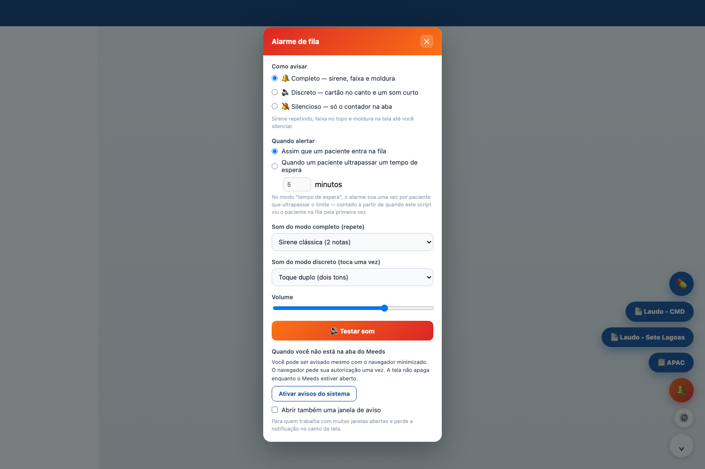
Intensidade, quando alertar, sons e avisos fora da aba.
Quando alertar
Assim que entra
Toca a cada paciente novo na fila.
Por tempo de espera
Toca uma vez por paciente que ultrapassar o limite que você definir.
Dois sons, um para cada modo
As sirenes foram feitas para repetir; tocadas uma vez só, soam
truncadas. Por isso a lista é separada:
Modo completo
Sirene clássica, ambulância, alarme, campainha, pulso grave (pensado para a madrugada) e sirene lenta.
Modo discreto
Toque duplo, sino curto, gota, acorde suave e dois cliques — este para quem divide a sala.
Escolher já toca
Ao selecionar um som, ele toca na hora. Não precisa clicar em "Testar".
06
Gerador de APAC
botão 📋 APAC
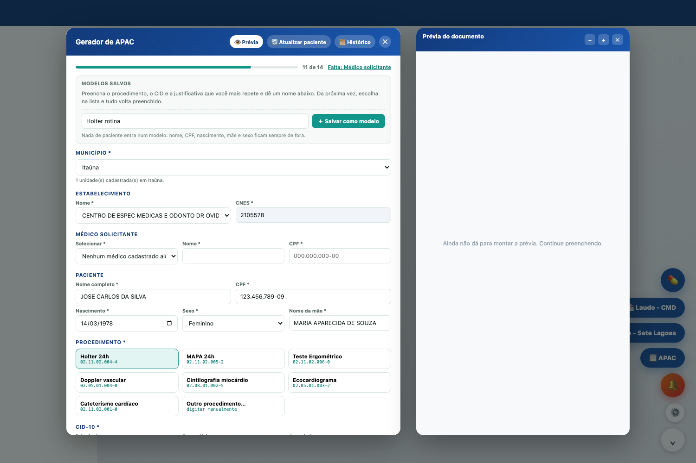
Guia de preenchimento no topo, modelos logo abaixo, e a prévia do documento ao lado.
A ordem que importa
Município é o primeiro campo. Ele libera as unidades daquela cidade — e trocar de município zera o estabelecimento, de propósito.
Os dados do paciente vêm sozinhos da tela do atendimento.
Procedimento, CID e texto do pedido são a parte clínica — a que os modelos guardam.
Por que trocar de município apaga o estabelecimento
Uma APAC emitida com o CNES de outra cidade é devolvida pela regulação e o
paciente perde a vaga. O incômodo de escolher de novo é proposital.
O guia de preenchimento
A barra no topo mostra quanto falta, e o texto ao lado diz qual é o próximo
campo pendente — clique nele e a tela leva você até lá. Se você tentar
gerar com campo faltando, o Assistente também leva até o primeiro.
Todos os campos ficam liberados o tempo todo. Preencha na ordem que quiser.
A prévia do documento
Abre sozinha ao lado do formulário e vai se montando enquanto você digita.
É o que mostra o campo trocado antes de virar papel. Se preferir sem
ela, clique em 👁 Prévia — fica fechada naquele gerador para sempre.
A tela mudou de paciente?
Se o Meeds carregar outro atendimento enquanto você preenche, o formulário
não troca sozinho. Aparece um aviso dizendo quem entrou, e você escolhe
entre Trocar para o paciente da tela e Continuar com este.
07
Modelos salvos
APAC e os dois laudos
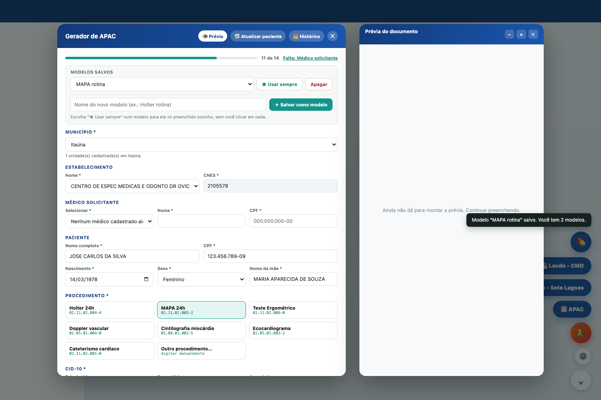
Dois modelos criados. O botão diz o que vai fazer antes de você clicar.
Se você pede o mesmo exame o dia inteiro, o modelo guarda a parte que se
repete — procedimento, código, CID e justificativa — e devolve com um clique.
Criar um modelo
Preencha o procedimento, o CID e a justificativa que você mais repete.
Escreva um nome no campo Nome do novo modelo.
Clique em ＋ Salvar como modelo. O campo se limpa: o próximo salvar cria outro.
Usar, substituir e apagar
Usar
Escolha na lista. Os campos são preenchidos na hora.
Vir preenchido sozinho
Escolha na lista e clique em ★ Usar sempre. Ele entra ao abrir o gerador, se a parte clínica estiver vazia.
Substituir
Digite o mesmo nome de um modelo existente. O botão muda para ↻ Substituir "nome", em laranja.
Apagar
Escolha na lista e clique em Apagar.
Nenhum dado de paciente entra num modelo
Nome, CPF, nascimento, mãe e sexo ficam sempre de fora — um modelo é feito
para ser usado com outra pessoa.
Cada gerador tem os seus
Os modelos da APAC não aparecem no laudo de Sete Lagoas, e vice-versa. Eles
ficam no seu navegador e sobrevivem a logout e atualização.
08
Consulta REMUME
botão 💊
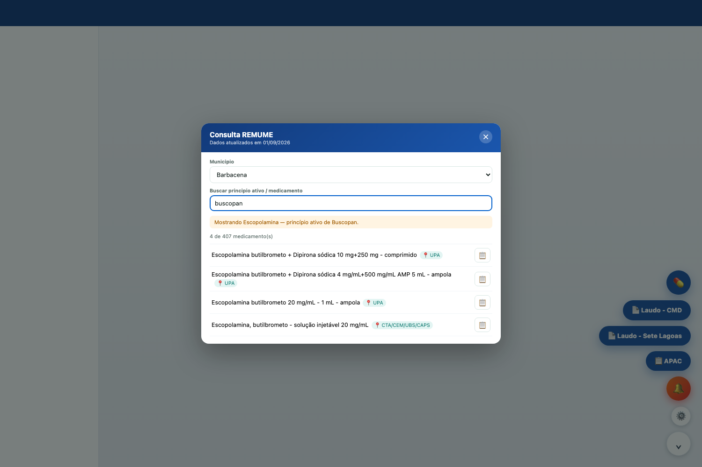
Busca por buscopan encontrando escopolamina.
Mostra a lista de medicamentos padronizados do município do atendimento. O
município é reconhecido sozinho; se não for, escolha na lista.
Cada item mostra onde é dispensado — UBS, UPA, CTA/CEM, CAF.
Para que serve na prática
Conferir antes de prescrever se o município tem aquele medicamento.
Receita do que a farmácia não tem é paciente voltando.
09
Laudos de Alto Custo
botões 📄
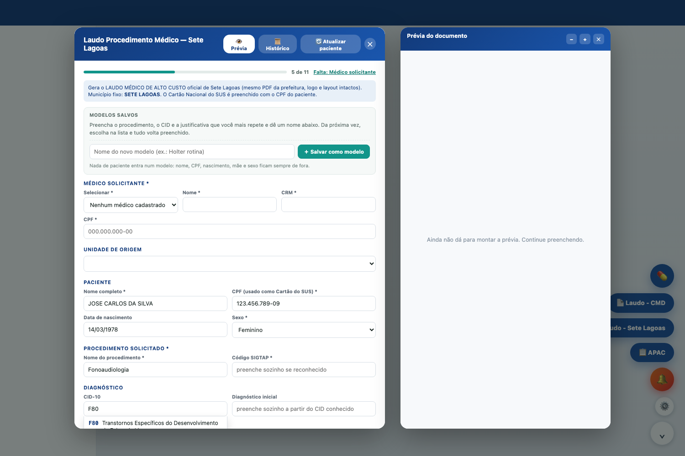
Sete Lagoas. Conceição do Mato Dentro funciona igual, no formulário da prefeitura de lá.
Preenchem o formulário oficial da prefeitura com os dados lidos da tela do
atendimento. Valem aqui as mesmas coisas da APAC:
Guia de preenchimento no topo, apontando o próximo campo pendente.
Modelos salvos — independentes dos da APAC.
Prévia do documento aberta ao lado.
Busca de CID-10 dentro do campo: digite o código ou o nome da doença.
Estes dois são exclusivos do município
O formulário de Sete Lagoas e o de Conceição do Mato Dentro são próprios de
cada prefeitura. Só a APAC é nacional e atende vários municípios na mesma tela.
10
Histórico de documentos
📜 Histórico, dentro de cada gerador
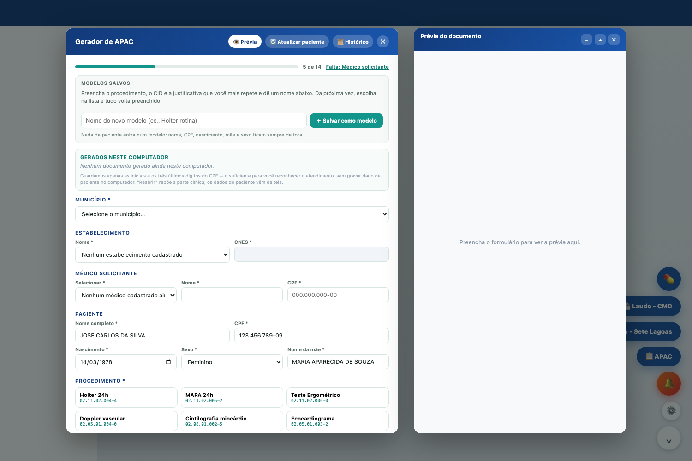
Os últimos documentos emitidos nesta máquina.
Guarda os últimos documentos que você emitiu, para você não redigitar a
parte clínica quando precisar de um parecido. Reabrir repõe
procedimento, CID, diagnóstico e justificativa.
O paciente não é reposto
Reabrir traz só a parte clínica. A identificação continua vindo fresca da
tela do atendimento — é o que impede o dado de um paciente vazar para o
laudo de outro.
O que aparece no histórico
Data, procedimento e uma referência que só você reconhece: iniciais e os três
últimos dígitos do CPF, como M.A.S. · •••890. Nome completo não é guardado.
11
Quando o Assistente é atualizado
aparece sozinho
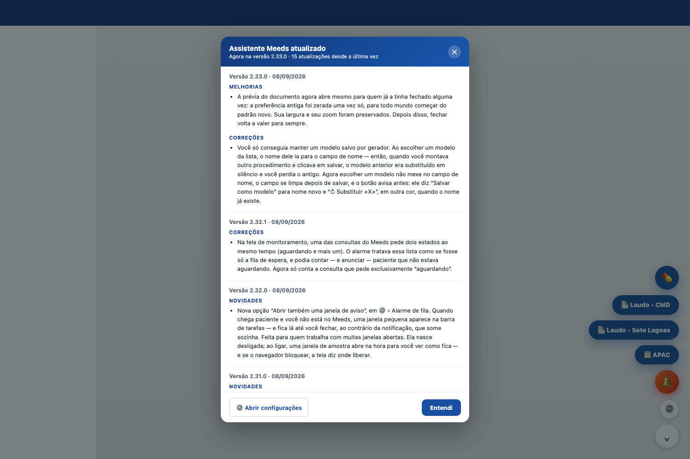
O que mudou, escrito para o dia a dia — não para o programador.
A atualização é automática: você não precisa reinstalar nada. Quando ela
chega, esta tela mostra o que mudou desde a última vez que você usou.
⚙️ Abrir configurações leva direto ao painel, para experimentar a novidade na hora.
Entendi fecha. Ela não volta a aparecer para a mesma versão.
Para reler depois: ⚙️ › aba Sobre › ver o que mudou.
Achou um problema? Tem uma ideia?
Na aba Sobre há um campo de feedback. Escreva em duas linhas o que
aconteceu ou o que faria sua rotina render mais — é dali que saem as próximas
versões.
12
Privacidade
leia se alguém perguntar
Esta página existe para você poder responder a um paciente, a um colega ou
à gestão sem precisar procurar ninguém.
O que NÃO é gravado, em lugar nenhum
Nome completo, CPF, data de nascimento, nome da mãe e telefone de paciente.
O conteúdo dos PDFs emitidos.
Nada disso vai para servidor nenhum — não existe servidor do Assistente.
O que fica salvo no seu navegador
Seu cadastro
Nome, CRM e CPF do médico, e as unidades com CNES.
Suas preferências
Funções ligadas, som e volume do alarme, largura da prévia.
Seus modelos
Só a parte clínica — nunca dado de paciente.
Histórico
Data, procedimento e a referência não identificável do paciente.
A regra de ouro
O Assistente lê a tela do atendimento para preencher formulário, usa
naquele instante e esquece. Ele não grava prontuário, não grava tela e não
envia dado de paciente para lugar nenhum.
Duas coisas que aparecem na tela e você deve saber
A prévia mostra os dados do paciente por mais tempo na tela — se você
divide a sala, feche-a ao levantar. E a notificação do sistema nunca
traz nome de paciente, só a quantidade de gente esperando, justamente porque
ela sai do navegador.
Se algo não estiver funcionando
O que você vê
O que fazer
Os botões não aparecem
Confira se você já entrou no Meeds. Com a tela de senha visível, o Assistente some de propósito.
O alarme não toca
Veja o ícone do sino: em 🔕 ele só conta na aba. Confira também se a função está ligada no ⚙️.
Não recebo aviso fora da aba
Ajustes do alarme › Ativar avisos do sistema. Se disser bloqueado, libere no cadeado da barra de endereço.
A prévia não abre
Ela precisa de tela larga e não abre no iPad. Se a sua tela é larga, clique em 👁 Prévia.
A APAC não preenche o paciente
Clique em 🔄 Atualizar paciente com o atendimento aberto na tela.
Perdi meus modelos ou meu cadastro
Eles ficam no navegador daquele computador. Se você trocou de máquina, restaure o backup em ⚙️ › Médicos.
Qualquer outra coisa
⚙️ › aba Sobre › campo de feedback. Descreva em duas linhas o que aconteceu.
Uma frase para levar
O Assistente trabalha para você, e não o contrário. Se alguma função estiver
atrapalhando em vez de ajudar, desligue-a no ⚙️ e conte no feedback — é assim
que ela melhora.